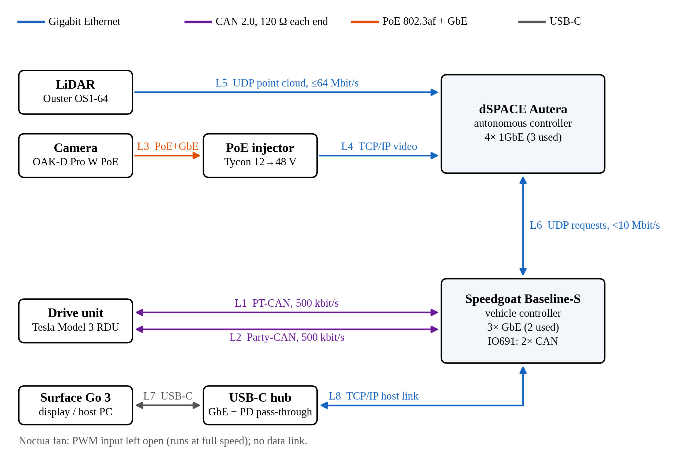
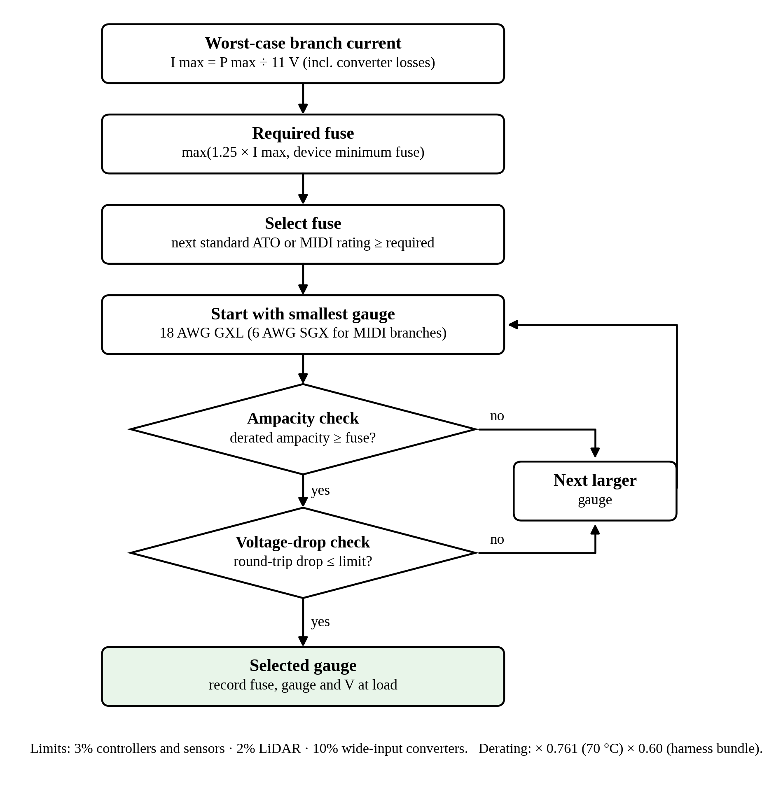
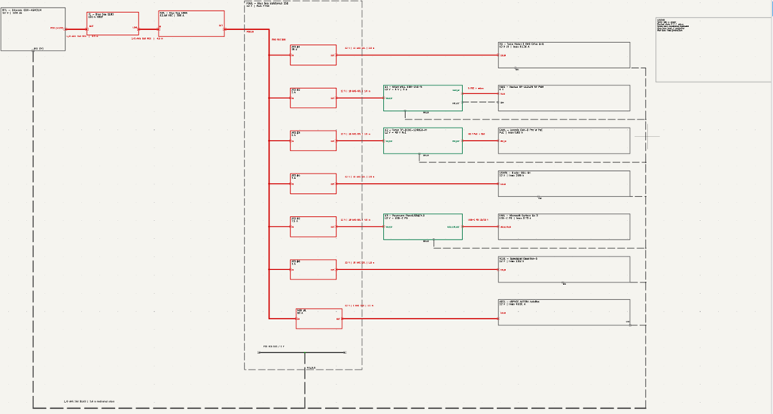
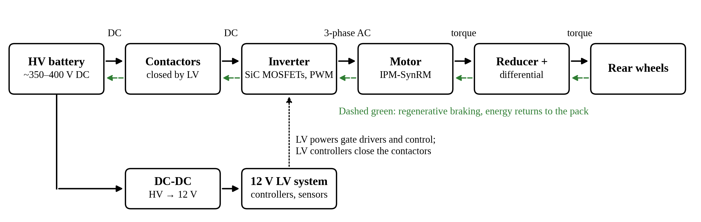

Projects / PROJ-ECOCAR-LV
12 V Low-Voltage Architecture for an Autonomous-Vehicle Sensor Suite

1.0The Problem
An EV competition car was getting a new connected-and-automated-vehicle (CAV) suite, and its stock 12 V system was never sized for it. Our task was to design the 12 V network that powers and connects seven new components, and to justify every part.
The seven loads:
- Tesla Model 3 rear drive unit, its 12 V side
- dSPACE AUTERA, the autonomous compute
- Speedgoat Baseline-S, the vehicle controller
- Ouster OS1-64 LiDAR
- Luxonis OAK-D Pro W PoE camera
- Microsoft Surface Go 3, the driver display
- Noctua 5 V fan
This was a paper design, done by a three-person team as the application challenge for the McMaster EcoCAR team (VHI Electrical Development Challenge 2026, Track B, EcoCAR EV Innovation Challenge GM track). The report was submitted on 2 October 2026 and presented on 4 October.
| Context | McMaster EcoCAR, VHI Electrical Development Challenge 2026, Track B |
|---|---|
| Team | Mustafa Alhamadni, Nabeel Abu Zaineh, Abdelrhman Aldeeb |
| Dates | September 2026; submitted Oct 2, presented Oct 4 |
| Status | Design complete |
| My role | Component research and calculations |
| Tools | KiCad (schematic), Excel sizing workbook (490+ formulas), Python for figures, Word |
| Scope | Power budget, battery, main feed, distribution, branch fuses and wire, converters, communication network, BOM |
My role
I was responsible for component research and calculations: finding and comparing the parts against their datasheets, and working the numbers behind the design, from the power budget and battery runtime to voltage drop and fuse and wire sizing. The design decisions on this page were made as a team, so the rest of the page says "we".
2.0Key Numbers
One load dominates the budget. The dSPACE AUTERA alone draws about 41 A worst case, roughly two-thirds of the total. Its power draw isn't published, so we estimated it at 450 W maximum from its components plus margin. That single estimate drives the size of the main feed, the main fuse and the distribution block, which is why it is the first assumption listed in section 7.0.
3.0Battery: Reserve Capacity, Not Cold-Cranking Amps
12 V batteries are usually compared on cold-cranking amps. CCA describes a 30-second engine start, and an EV never cranks an engine. What this system actually does is hold a steady electronic load of about 29 A. The rating that describes that is reserve capacity: minutes of runtime at 25 A.
We selected the Odyssey ODX-AGM31M: 220 minutes of reserve capacity, and rated to +80 °C, which clears the 70 °C engine bay it would sit in. At typical load that gives an estimated ~95 minutes to 50% charge with the battery carrying the system alone.
Design decision
Choosing on the headline spec would have optimised for a job the battery never does. Picking the metric that matches the real load profile is the whole decision; the part number follows from it.
4.0Main Feed and Protection
Voltage drop set the gauge, not ampacity
2 AWG could carry the current. It failed anyway: over the 10 m round trip it dropped 3.3%, past our 3% limit. 1/0 AWG drops 2.1%. On a 12 V system there is very little voltage to spare, so the cable is sized by how much it loses, not by how much it can carry before it overheats.
A 100 A fuse on the battery stud
The main fuse is a 100 A MRBF, sized from the worst-case current with two margins:
60.4 A × 1.25 (continuous) × 1.25 (future growth) = 94 A → 100 A
- Mounted directly on the battery terminal, so no length of cable is left unprotected.
- 10,000 A interrupt rating, above the battery's estimated ~3,500 A fault current, so the fuse can actually clear a dead short.
- 1.67× the largest branch fuse (60 A), so a fault on one branch clears at that branch and leaves the rest of the system running.
A manual disconnect and a dedicated return
A Blue Sea 6006 rotary switch sits within 0.5 m of the fuse, reachable with the hood open, and cuts the battery from everything downstream. It is rated 300 A continuous against a 100 A fuse. The negative side gets its own 1/0 AWG return from the distribution block to the battery instead of using the chassis, which keeps sensor grounds off the chassis. It is also counted in the 10 m loop, so the 2.1% figure includes it.
A distribution block chosen for one big branch
The AUTERA needs a 60 A fuse, and no blade-fuse slot supports that. The Blue Sea SafetyHub 150 has MIDI slots for the large branch plus six blade slots, a negative bus and IP66 sealing. At 60.4 A worst case it runs well inside its 200 A combined rating, and three MIDI slots stay free for expansion. The upgrade path we identified is a CAN-connected power module that reports current on each branch.
5.0Branch Fuse and Wire Sizing
Every branch went through the same method, set up in the sizing workbook:
- Fuse = next standard size at or above 1.25 × worst-case current (or the device's minimum fuse, if larger).
- Wire = the smallest gauge whose derated ampacity exceeds the fuse rating and whose round-trip voltage drop is within the limit for that load.
Ampacity is derated twice: × 0.761 for the 70 °C environment, then for bundling: × 0.60 for branch wires leaving the distribution block together, × 0.70 for dedicated positive and negative pairs like the main feed and the AUTERA branch. The voltage-drop limits differ by load: 3% for controllers and sensors, 2% for the LiDAR, and 10% for wide-input converters, which regulate their own output.

| Branch | Max current (A) | Fuse | Wire |
|---|---|---|---|
| dSPACE AUTERA | 40.9 | 60 A MIDI | 6 AWG |
| Motor (12 V side) | 11.4 | 15 A | 12 AWG |
| Surface Go 3 | 2.73 | 7.5 A | 18 AWG |
| LiDAR | 2.55 | 5 A | 16 AWG |
| Speedgoat | 1.82 | 5 A | 18 AWG |
| Camera | 0.80 | 3 A | 18 AWG |
| Fan | 0.19 | 3 A | 18 AWG |
On the small branches, 1.25 × current gives fuses of 1 to 3 A, and the device minimum governs instead. Converter inputs get at least 3 A so input-capacitor inrush doesn't blow them. The USB-C PD supply gets the 7.5 A its manufacturer recommends. The LiDAR gets 5 A to match the fuse in Ouster's own interface box.
The motor branch went up a size for voltage drop: 14 AWG would carry the current, but it fails the 3% limit over its run, so it uses 12 AWG. The LiDAR row shows the same effect more sharply. 18 AWG passes both ampacity and the usual 3% limit, but the LiDAR's own cable adds about 0.3 Ω of loop resistance and the sensor warns below 9.5 V. The tighter 2% limit pushed it to 16 AWG, leaving 9.78 V at the sensor in the worst case.


Three converters for loads that can't use 12 V
- 12 → 48 V PoE injector for the camera, which carries power and Gigabit Ethernet on one cable.
- 12 → 5 V regulated supply for the fan.
- 12 V → USB-C PD 65 W for the Surface Go 3.
6.0Communication Architecture
The network in the hero figure has eight links. The AUTERA receives the LiDAR point cloud (L5, up to 64 Mbit/s over UDP) and camera video (L4) and exchanges requests with the Speedgoat (L6). The Speedgoat talks to the drive unit and links to the driver display (L8). Two of the components could not connect as delivered, so the network had to bridge them:
- The Speedgoat had no CAN port. We added an IO691 CAN module for the motor's two CAN buses, PT-CAN and Party-CAN (L1, L2), both at 500 kbit/s with 120 Ω termination at each end.
- The Surface had no Ethernet. We added a USB-C hub with Gigabit Ethernet and charging pass-through, so a single cable (L7) carries both data and power to the display.
No Ethernet switch
The AUTERA has four Gigabit ports, and we used three of them. Giving each sensor its own port means no shared bandwidth between the LiDAR and the camera, and no extra powered box in the car that could fail.
Design decision
A switch would have been the generic answer and would have added a component, a fuse branch and a single point of failure. Checking the port count on the compute unit first removed the need for one.

7.0What We Would Verify Next
We flagged three assumptions in the report. Each one has a clear check, and each would change the design if it turned out wrong.
| Assumption | What would change |
|---|---|
| AUTERA power is estimated (450 W max) | Adding a GPU would raise its branch to 70 A and 4 AWG |
| Tesla CAN rate and termination come from community reverse-engineering | To be confirmed with a CAN analyser |
| The vehicle's HV→12 V DC-DC converter has headroom for the added ~29 A | Outside our scope and no rating was given; must be confirmed |
8.0What This Project Taught Me
Most of the decisions on this page came down to choosing the right criterion before choosing a part: reserve capacity instead of cranking amps, voltage drop instead of ampacity, port count before adding a switch. Once the criterion was right, the part was usually obvious.
It also showed how far one estimate can travel through a design. The AUTERA's 450 W figure sets two-thirds of the budget, and from there the main fuse, the main feed and the distribution block. Stating it clearly as an estimate, and saying what changes if it is wrong, was as important as the sizing itself.
The method links back to my bench work. In the DC power supply the gap between design and measurement came down to real diode drops and contact resistance; here those losses were budgeted on paper from the start.